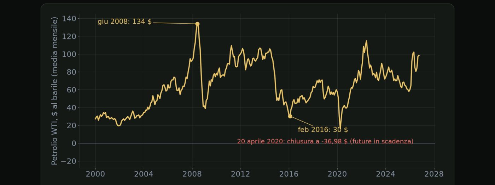

Materiale educativo, non consulenza finanziaria. Il trading con leva su forex, CFD e futures comporta un rischio elevato: puoi perdere tutto il capitale. Numeri, esempi e simulazioni non prevedono risultati futuri.
OPEC, scorte settimanali e perché il petrolio arriva fino al tuo cambio.
In questo modulo extra vediamo tre argomenti che completano il quadro: il petrolio, il posizionamento dei grandi operatori e la stagionalità. Cominciamo dal petrolio, la materia prima che entra nell'inflazione, nei conti con l'estero e perfino nel valore di alcune valute.
Tre forze muovono il prezzo del petrolio. La prima è l'OPEC più, il gruppo dei principali paesi produttori, che nelle sue riunioni decide quanto produrre. Un taglio a sorpresa può spostare il prezzo di diversi punti percentuali in pochi minuti. La seconda sono le scorte americane: ogni mercoledì alle sedici e trenta ora italiana l'agenzia per l'energia americana, l'EIA, pubblica le scorte di greggio. Un calo più forte del previsto di solito spinge il prezzo in su. Il martedì sera escono stime private dell'API. La terza è la domanda, che dipende dalla crescita mondiale e soprattutto dalla Cina, e la geopolitica: le tensioni nelle zone di produzione o lungo le rotte del petrolio fanno salire il prezzo per paura di interruzioni.

Ecco il prezzo del petrolio americano, il WTI, dal 2000, in media mensile. A giugno 2008 arriva intorno ai centotrentaquattro dollari, poi la crisi lo dimezza in pochi mesi. Tra il 2014 e l'inizio del 2016 crolla di nuovo, fino a circa trenta dollari a febbraio 2016. E il venti aprile 2020 succede una cosa mai vista: il contratto future in scadenza chiude a meno trentasette dollari, perché nessuno sapeva dove stoccare il petrolio. Nel 2022 torna sopra i cento dollari. Sono dati storici: raccontano cosa è successo, non dove andrà il prezzo.
Cosa significa per il rischio. Il mercoledì alle sedici e trenta, se operi sul petrolio o sul dollaro canadese, evita ordini con stop molto stretti nei minuti del dato. Segna le riunioni dell'OPEC più in agenda come un dato ad alto impatto: le decisioni a sorpresa arrivano spesso nel fine settimana, e il lunedì il mercato può aprire con un gap. E ricorda che il petrolio può muoversi del cinque per cento o più in una sola giornata: a parità di rischio, lo stop è più largo e il lotto deve essere più piccolo.
Il petrolio non si prevede. Si rispetta.
Il rapporto settimanale sulle posizioni nei future americani.
In questa lezione vediamo il rapporto COT, Commitments of Traders, che ogni settimana mostra come sono posizionati i grandi operatori nei mercati future americani. Non è un segnale, ma racconta quanto è affollata una scommessa.
Il rapporto lo pubblica la CFTC, l'autorità americana che vigila sui mercati dei future. Esce ogni venerdì alle ventuno e trenta ora italiana, ma fotografa le posizioni del martedì precedente: quando lo leggi, ha già tre giorni. Mostra quante posizioni lunghe e corte hanno le diverse categorie di operatori, su valute, oro, petrolio, indici e titoli di Stato.
| Categoria | Chi sono | Come leggerli |
|---|---|---|
| Operatori commerciali | produttori e utilizzatori che si coprono | si coprono dal rischio, non scommettono |
| Fondi speculativi | hedge fund e gestori | seguono le tendenze: la loro posizione netta è la più osservata |
| Piccoli operatori | posizioni sotto le soglie di segnalazione | spesso arrivano tardi |
Come si usa il COT, con cautela. Il dato più utile sono gli estremi: quando i fondi speculativi hanno una posizione netta vicina ai massimi degli ultimi anni, tutti sono dalla stessa parte. È una scommessa affollata. Questo non significa che il prezzo stia per invertire: un posizionamento estremo può restare tale per mesi, mentre il prezzo continua nella stessa direzione. Il punto è il rischio: quando una scommessa è affollata e arriva una sorpresa, molti devono chiudere insieme, e il movimento contrario è più violento. In quelle fasi, lotti più piccoli.
Quando tutti sono dalla stessa parte, l'uscita è stretta.
Fine mese, festività, agosto e cambio dell'ora: i giorni in cui gli spread cambiano.
Nell'ultima lezione del modulo extra parliamo di calendario, ma non dei dati: dei giorni in cui il mercato ha meno operatori, gli spread si allargano e i movimenti diventano strani. Non sono previsioni, sono condizioni da conoscere.
| Quando | Cosa succede di solito |
|---|---|
| Ogni giorno, verso le 23:00 | cambio di giornata dei broker: spread larghi per qualche minuto |
| Fine mese e fine trimestre | ribilanciamenti dei grandi fondi, movimenti senza notizie |
| Festività (USA, Regno Unito, Giappone) | meno scambi, movimenti più irregolari |
| Agosto e fine dicembre | liquidità bassa per settimane |
| Settimane del cambio dell'ora | i dati americani escono un'ora prima o dopo del solito |
| Italia: ora solare | domenica 25 ottobre 2026 |
| USA: ora solare | domenica 1 novembre 2026 |
| Dati USA delle 8:30 di New York | 13:30 italiane invece delle 14:30 |
| Fed del 28 ottobre | 19:00 italiane invece delle 20:00 |
Cosa fare in pratica. Segna questi giorni nel diario macro e nello scenario della settimana, come fai con i dati. Nei momenti di liquidità bassa evita gli stop troppo stretti: lo spread da solo può bastare a farli scattare. E nelle settimane sottili non serve forzare: meno operazioni, e solo quelle che rispettano tutte le regole.
Non è solo cosa esce. È anche quando il mercato è pronto ad ascoltare.
Spunta ogni punto solo se sapresti spiegarlo a voce a un altro trader.
Materiale educativo, non consulenza finanziaria. Il trading con leva su forex, CFD e futures comporta un rischio elevato: puoi perdere tutto il capitale. Numeri, esempi e simulazioni non prevedono risultati futuri. · riskly.trade